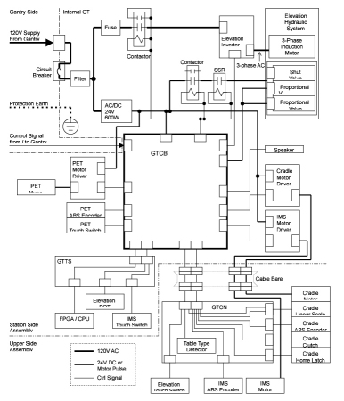
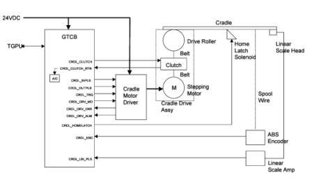
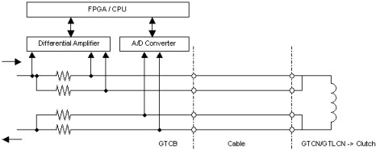
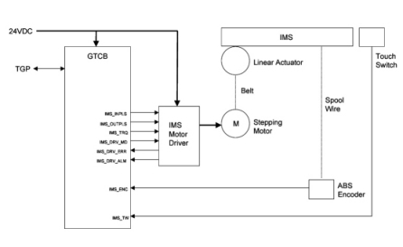
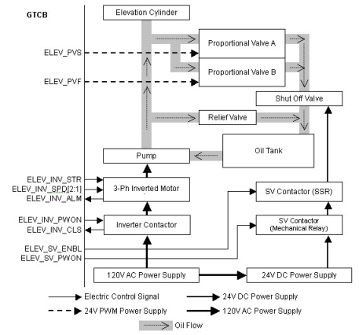
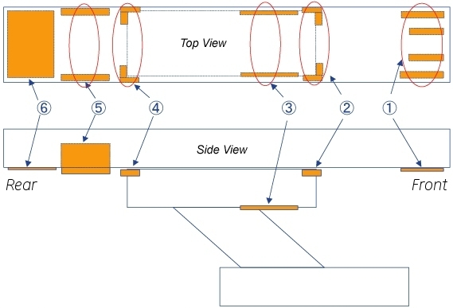
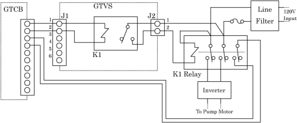
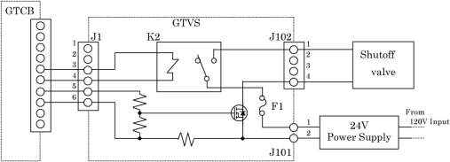
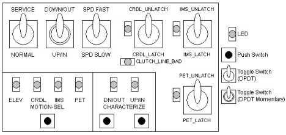

Operating Documentation
Direction 5196839-800, Rev# 6
RT16 and Xtra Service Info Adv
Operating Documentation |
| Last Revised: | 10 April 2008 |
The GT (Global Table) is a next generation table system used for LightSpeed 7.X system. Depending on the difference of scannable range, there are two types of table; GT2000 and GT1700.
The main features of the table system used on this CT system, compared with tables used on LightSpeed 5.X or previous systems, are as follows:
GT2000 provides 2,000mm scannable range with 227kg patient weight, while GT1700 provides 1,700mm scannable range with 227kg patient weight. Both of the tables provide 227kg (500lb) patient weight capacity with full cradle extension.
New elevation mechanism with GE traditional table outlook. Table footprint unchanged by table height.
Capability for advanced applications such as Shuttle mode, Helical scan while acceleration, and 175mm/sec Helical.
Improved patient setup: Full range scan is available without the sliding stretcher patient. Scannable range is constant against table height. High speed (40mm/sec Ave.) and comfortable (Shockless and Silent) dual speed elevation.
Interface for PET
The following is the GT Block diagram.
Illustration 1: Global Table Block Diagram

Control of this cradle drive system is provided by the GTCB (GT Control board) and stepping motor driver. The GTCB generates the IN/OUT drive pulse and sends torque control signals to the stepping motor driver. The stepping motor driver drives the cradle stepping motor. The motor turns a drive roller at the front of the table on which the cradle rests via drive belts and clutch, thus causing the cradle to move.
Illustration 2: Cradle Drive

Stepping motor driver drives the stepping motor by the push-pull pulse from the GTCB. The speed of driving depends on the frequency of the pulse. Stepping motor driver also controls the current to the stepping motor according to the command from the GTCB to control the torque. Stepping motor driver has 8 steps of the volume of the current to the stepping motor, depending on the level of the torque control signal from firmware.
For cradle position control, there are two sensors; Multi-turn Absolute Encoder and Linear Scale Sensor. During power-up or reset sequence, the GTCB firmware collects the value of the Absolute Encoder to know the initial position of the cradle. Once the GTCB gets the initial position of the cradle, the Linear Scale Sensor is used for sensing the relative position of the cradle from the start position. It sends the data on RS485 serial interface. The Linear Scale sensor sends the Pi/4-shifted dual quadrature pulse each 0.01mm movement. And it has alarm output and external reset input.
To avoid unexpected release of the clutch caused by cable failure or disconnection, the Cradle Clutch control line is duplicated, and the current is watched by A/D converter on the GTCB.
Illustration 3: Clutch Function

The IMS drive system is similar to cradle drive system except position sensing. The IMS only uses an absolute encoder for position sensing. Rotational power of the stepping motor is converted to linear movement by linear actuator. The IMS also has several touch switches, so that the GTCB stops motion of the IMS immediately after it detects the SHORT of the switch,
Illustration 4: IMS Drive

The IMS uses the same stepping motor driver as the cradle stepping motor driver.
The IMS uses the same multi-turn absolute encoder as the cradle absolute encoder.
The IMS has the 6 Tape Switches; 2 for IMS RIGHT SIDE COVER, 2 for IMS LEFT RIGHT COVER, and 2 for IMS REAR UPPER COVER (see Illustration 6).
The GT has two modes of speed for Upward and two modes of speed for Downward. The Inverter makes PWM signal and send to the Pump automatically to make smooth ramp of speed according to ELEV_SPD signal. The Pump is controlled by the Inverter, and puts oil into the Elevation Cylinder. The Relief Valve opens its own valve mechanically when the oil hydraulic pressure is higher than its threshold.
The Proportional Valves A and B, which have role in removing oil from the Elevation Cylinder, control oil flow volume by input voltage which is applied as PWM signal with 24V amplitude. They are the same components, so that the speed of oil flow is twice of the single valve immediately after they are activated at the same time. The Shut-off valve is equipped to shut oil flow in case of oil leaking from the proportional valves.
The Inverter contactor is normally turned on. On the other hand, the SV (Shut-off Valve) Contactor controls each downward operation.
Illustration 5: Elevation Function

The GTCB measures elevation height by reading the digital-converted value of the voltage from the Elevation Potentiometer. The potentiometer is a 5k Ohms resistor, and 4.8VDC is supplied. When the table is moving up or down, the A/D converter is sampled by the firmware. The value from the A/D converter represents the table’s position. When the specific position is ok, the firmware stops the control signal.
There are several touch switches equipped on the GT to prevent a person or object to be pinched. Four of them are the tape switches located at the TOP FRONT COVER. The rest of three are the mechanical switches located at side and rear of the table.
Illustration 6: Locations of Tape Switches and Touch Switches

Table 1: Tape Switches and Limit Switches
| Location | Description in gesyslog | Description in Block Diagram | Switch Type |
| 1 | Elevation touch switch1 (tape switches on underside of top front cover) | T-Sensor_Elev1 T-Sensor_Elev3 T-Sensor_Elev2 T-Sensor_Elev4 | Tape Switch |
| 2 | IMS tape switch OUT (front) | T-Sensor_IMS3 T-Sensor_IMS4 | |
| 3 | Elevation touch switch4 (tape sw on underside of IMS side cover) | T-Sensor_Elev10 T-Sensor_Elev11 | |
| 4 | IMS Tape Switch IN (rear) | T-Sensor_IMS1 T-Sensor_IMS2 | |
| 5 | Elevation touch switch2 (switches on underside of top side cover) | T-Sensor_Elev5 T-Sensor_Elev6 | Limit Switch |
| 6 | Elevation touch switch3 (switch on underside of top rear cover) | T-Sensor_Elev7 T-Sensor_Elev8 T-Sensor_Elev9 |
The Tape switches are connected through the internal 470-Ohm resister and it can detect failure of the tape switch (open mode) or disconnection of the cable as well as detecting contact of the table with any object.
The Mechanical switches are connected through the internal 5.1k-Ohm resister and it can detect failure of the tape switch (open mode) or disconnection of the cable as well as detecting contact of the table with any object.
This board is attached to Inverter assembly in Global Table, and controls the relays and FET for elevation actuators by GTCB signals.
INVERTER RELAY CONTROL
The GTVS controls the making and breaking of inverter relay (K1).
Illustration 7: Inverter Relay Control

SHUTOFF VALVE CONTROL
The GTVS controls the shutoff valve open/close. The current of the shutoff valve shall be less than 1.5A. Therefore, the current capacity of this board should be more than 2A. Shutoff valve is supplied from 24V power supply through J101, and controlled by signals from GTCB via J1. 24V line of the shutoff valve is opened or closed by K2 releay, another line (0V) is FET.
Illustration 8: Shutoff Valve Control

For Service and Engineering use, the GTCB provides some switches as shown below.
Illustration 9: Service Switches and relative LEDs

Illustration 10: Service Switch Block Diagram

The following table shows the total switches of the GTCB.
Table 2: GTCB Switches
| SW # | Description | Input Signal | Type of Switch |
| S1 | Service Mode | SW_SVC_MODE_N | DTDP Toggle |
| S2 | Command Select | SW_CMD_SEL_N | Push Button |
| S3 | Service UP-IN / DOWN-OUT | SW_SVC_UP_IN_N | DTDP Toggle(Momentary) |
| SW_SVC_DN_OUT_N | |||
| S4 | Service Speed Control | SW_SPD_FAST_N | DTDP Toggle |
| SW_SPD_SLOW_N | |||
| S5 | Characterize 1 | SW_CHAR1_N | Push Button |
| S6 | Characterize 2 | SW_CHAR2_N | Push Button |
| S7 | Service Cradle Unlatch | SW_SVC_CRDL_UNLATCH | DTDP Toggle |
| S8 | Service IMS Unlatch | SW_SVC_IMS_UNLATCH | DTDP Toggle |
| S9 | Service PET Unlatch | SW_SVC_PET_UNLATCH | DTDP Toggle |
| S11 | Board Reset | SW_BRD_RST (to reset / watchdog IC)WDT_ENBL = “L” (Peripheral Device) | Push-Button |
| S13 | CPU Reset | SW_CPU_RESET_N | Push-Button |
The following table shows function of each switch or signal.
Table 3: Switch Function
| S1 SERVICE MODE | ||||
| Position | SW_SVC_MODE_N | Description | ||
| SERVICE | L | The board is in Service Mode, allowing for service functions. | ||
| NORMAL | H | The board is in the Normal Operating Mode (Only Firmware Control). | ||
| S2 COMMAND SELECT | ||||
| Position | SW_CMD_SEL_N | Description | ||
| Pushed | L | Service movement target is changed as below. | ||
| Released | H | No Motion | ||
| Target is changed as: Elevation >> Cradle >> IMS >> PET (if GTPET is mounted) >> Elevation >> | ||||
| S3 SERVICE UP-IN / DOWN-OUT | ||||
| Position | SW_SVC_UP_IN_N | SW_SVC_DN_OUT_N | Description | |
| UP/IN | L | H | Target function moves upward or inward. | |
| None | H | H | No Motion | |
| DN/OUT | H | L | Target function moves downward or outward. | |
| S4 SERVICE SPEED CONTROL | ||||
| Position | SW_SPD_FAST_N | SW_SPD_SLOW_N | Description | |
| FAST | L | H | Move fast | |
| SLOW | H | L | Move slowly | |
| S5 / S6 CHARACTERIZE A / B | ||||
| Position | SW_CHAR1_N | SW_CHAR2_N | Description | |
| Char A | Char B | |||
| Pushed | Pushed | L | L | Characterize the target function. |
| Pushed | Released | L | H | No Motion |
| Released | Pushed | H | L | No Motion |
| Released | Released | H | H | No Motion |
| S7 SERVICE CRADLE UNLATCH | ||||
| Position | SW_SVC_CRDL_UNLATCH | Description | ||
| UNLTACH | L | Unlatch the Cradle Clutch and Home Latch. | ||
| LATCH | H | Latch the Cradle Clutch and Home Latch. | ||
| S8 SERVICE IMS UNLATCH | ||||
| Position | SW_SVC_IMS_UNLATCH | Description | ||
| UNLTACH | L | IMS Motor Excitation OFF | ||
| LATCH | H | IMS Motor Excitation ON (Normal) | ||
| S9 SERVICE PET UNLATCH | ||||
| Position | SW_SVC_PET_UNLATCH | Description | ||
| UNLTACH | L | PET Motor Excitation OFF | ||
| LATCH | H | PET Motor Excitation ON (Normal) | ||
| S11 BOARD RESET | ||||
| Position | SW_BRD_RESET_N | Description | ||
| Pushed | L | Reset the whole board. | ||
| Pushed >> Released | L >> H | Hardware Configuration is done. | ||
| Released | H | No Motion | ||
| S13 CPU RESET | ||||
| Position | SW_CPU_RESET_N | Description | ||
| Pushed | L | Reset Program on NIOS and clear the resisters internal NIOS. | ||
| Pushed >> Released | L >> H | Run Program on NIOS with one mode selected by S104. | ||
| Released | H | No Motion | ||
The following table shows the list of fuses on the GTCB.
Table 4: Fuses List
| Fuse # | Rating | Function | Board LED | Test Point | Description | |
| GTCB | GTCB2 | |||||
| F1 | 3.2 A | 3.2 A | Proportional valve 1 (slow down) 24 VDC | DS 42 | N/A | Protects 24VDC from GT Elevation PV1 or LCGT Elevation Up |
| F2 | 3.2 A | 3.2 A | Proportional valve 2 (1 + 2 for fast down) 24 VDC | DS 43 | N/A | Protects 24VDC from GT Elevation PV2 or LCGT Elevation Down |
| F3 | 2.0 A | 3.2 A | Cradle home latch and clutch 24 VDC | DS 44 | N/A | Protects 24VDC from Cradle Home Latch and Clutch |
| F4 | - | 3.2 A | Power to touch switches and other components 24 VDC | DS 9 | TP 1 | Protects 24VDC from other components |
| F5 | 2.0 A | 3.0 A | Power to analog and digital logic 5 VDC | DS 41 | TP 2 TP 3* | Protects 5VDC from Peripherals |
| F6 | - | 3.2 A | Power to PET moving base solenoid / brake 24 VDC | DS 14 | N/A | Protects 24VDC from PET Clutch / Brake |
| F7 | 3.2 A | 3.2 A | Power to data bus / clock / LEDs 3.3 VDC | N/A | TP 4 | Protects 3.3VDC from FPGA I/O and Peripherals |
| ||||||